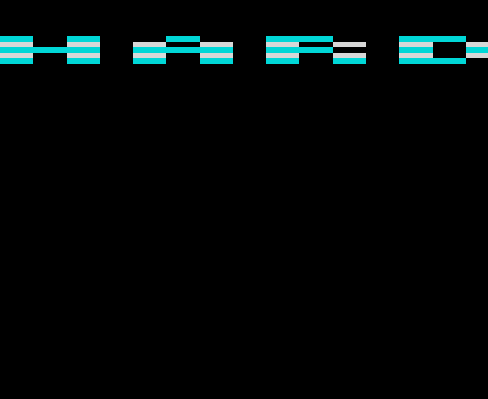

48K128K11 November 2026
Text in the border while the screen loads
A message scrolls through the top border while Shardstorm's loading screen loads, then the tune plays while the game loads. Now on the 48K too.
The first time text scrolled in the border while a tape loaded - as far as we could find, no Spectrum loader had done it. While the loading screen comes in, the message "SHARDSTORM ... LOADING ... BLAST THE ROCKS ..." scrolls through the top border, 8 pixels a frame; then the screen appears, and the tune plays while the game loads.
The 48K has no AY, so its tape plays the scroller while the screen loads, then hands over to the ROM to load the game's three parts, as an ordinary tape would.

How it works
Two loaders on one tape
The ROM loads two of our loaders. The first, locked to the beam (every way through it exactly one scan line), loads the loading screen and draws the text; the second plays the tune while it loads the game (see the tune while it loads). The first hands over to the second when the screen is in and checked.
On the 48K
The same scroller, timed for the 48K's 224 T-state lines. When the screen is in, a 71-byte hand-over is copied to an address no part of the game loads over, and calls the ROM's own loader for each of the game's three parts - setting up the ROM's interrupt mode first, and a stop with a red border should the tape fail - then starts the game.
Drawing text with OUTs
The text is 20 lines of the top border: five font rows of four lines each, sixteen OUTs a line, each a block 24 pixels wide. Every line also reads the tape once, at the same point in the line. Moving the text 8 pixels a frame - a third of a block - is done by starting the whole band 4 or 8 T-states early, so the border changes colour one latch sooner; every third frame the blocks themselves move, rebuilt in twelve exactly-timed slices of housekeeping spread through the frame.
How it was checked
Checked by shardscroll.js through our emulator's tape deck: every frame of the screen's load exactly a frame, the border decoded latch by latch against the message (0 of 1.85 million wrong), the hand-over, every AY write, and the game byte for byte.
Screens
As our emulator draws it
Full frames, border and all. Click a picture to see it bigger.


Download
Load it yourself
For the 48K and the 128K. Each machine has its own tape; its .tzx and .tap hold the same blocks.
- In an emulator (ZX Spin, Retro Virtual Machine, Fuse and others): choose the machine the demo says - a 128K or +2 for the 128K ones - and open the
.tzxor the.tap. They hold the same blocks; use whichever your emulator prefers. On a 128K, pick Tape Loader; on a 48K, typeLOAD "". - Switch off instant and fast loading. The custom loaders read the tape signal themselves, edge by edge: an emulator that skips the tape skips the loader, and everything it does while it loads.
- On a real Spectrum: play the
.tzxinto the EAR socket from a TZX player. These are for the original machines' timing: the 48K, the 128K and the grey +2.